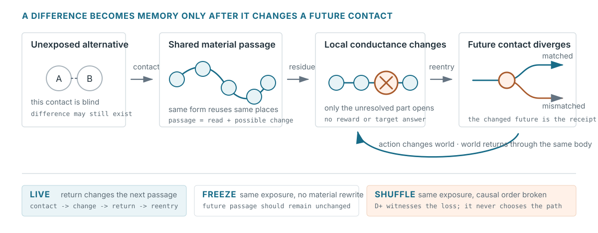

Public research abstract · basal cognition / material memory
From Difference to Memory in a Minimal Non-Neural Carrier
How contact can leave a trace in the same substrate that later conducts repair
A step before the finished object
Physics, biology, and computation usually begin with named things—particles, cells, networks, agents—and then describe relations among them. This project tries a narrower reversal. Rather than declare that everything is difference, it begins one step earlier than the finished object: with alternatives in a substrate, and with the contacts through which an alternative can matter to what happens next.
Difference is not offered as a replacement for physics. It is a restraint against letting coordinates, particles, graphs, or readouts silently become the process being described. Levin’s work on basal cognition motivates a related move across scale: ask what a system can sense, retain, pursue, and repair before deciding which disciplinary category owns the phenomenon.
Contact makes a difference accessible
A difference may exist without being exposed by one contact. A blind probe does not establish equivalence across every possible continuation. Conversely, measurement is itself physical contact: a registered outcome belongs to the coupled history of system and apparatus, not to a view from outside. This does not solve quantum measurement; it only refuses to treat an observed pattern as a photograph of untouched alternatives.
Operationally, two retained histories count as distinguishable only if replacing one with the other changes some admissible later contact. The formal quantity D+ witnesses the strongest such future difference. It is not an organ of the carrier: it never chooses a route, creates a memory, computes a geometry, or tells the substrate what to do.

The carrier hypothesis
Contact must change the same substrate that later conducts a changed continuation.
- A compatible closure reuses the same places and later acts as one whole.
- Only an unresolved real passage opens new conductance.
- Action must change the world before return can be earned.
- Reentry must change a later contact and survive restart.
freeze / blocked / shufflemust break that exact gain.